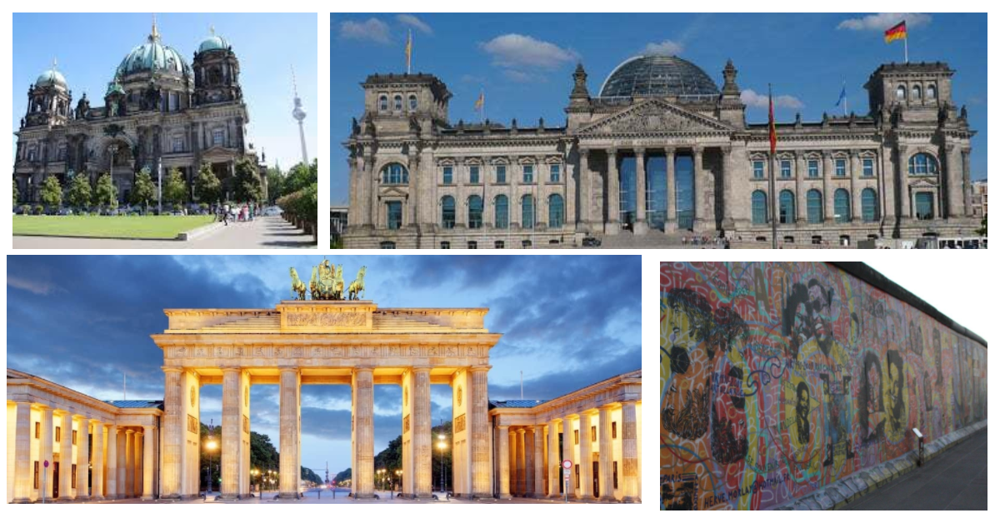

berlim
Berlim, a capital vibrante da Alemanha, é um tesouro histórico e cultural. A icônica Porta de Brandemburgo e o Muro de Berlim representam a história turbulenta da cidade. Museus de classe mundial, como a Ilha dos Museus, abrigam arte e artefatos valiosos. Os bairros de Kreuzberg e Prenzlauer Berg exibem uma cena moderna e alternativa, com cafés e galerias descoladas. O Memorial do Holocausto e o Checkpoint Charlie são testemunhas de um passado complexo. O Parque Tiergarten oferece tranquilidade, enquanto a vida noturna eletrizante em locais como a rua Oranienburger Straße atrai os mais animados. Berlim é uma metrópole que celebra sua história, cultura e diversidade de maneira única.
